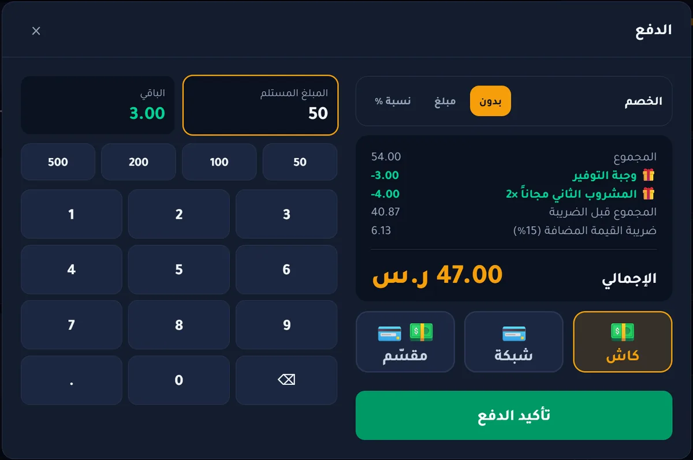

الفاتورة الإلكترونية للمطاعم: دليل المرحلة الثانية المبسّط
إذا عندك مطعم أو كافيه مسجّل في ضريبة القيمة المضافة، فالفاتورة الإلكترونية صارت جزءاً من شغلك اليومي. هنا نشرح لك المرحلة الثانية بلغة بسيطة: وش المطلوب منك، ووش لازم يسويه برنامج الكاشير عنك.
المرحلة الأولى والمرحلة الثانية: وش الفرق؟
المرحلة الأولى (الإصدار): تصدر فواتيرك من نظام إلكتروني بدل الورق أو الإكسل، وتحتوي الفاتورة المبسطة على رمز QR بالبيانات الأساسية: اسم البائع، الرقم الضريبي، التاريخ والوقت، الإجمالي، وقيمة الضريبة.
المرحلة الثانية (الربط والتكامل): نظامك يرتبط بمنصة «فاتورة» التابعة لهيئة الزكاة والضريبة والجمارك. كل فاتورة تصدر بصيغة XML موقّعة إلكترونياً، وتُرسل للهيئة. الهيئة تطبّق المرحلة الثانية على المنشآت على شكل موجات، وتبلّغ كل منشأة بموعدها مسبقاً.
تأكد من موعد منشأتك: ادخل على بوابة «فاتورة» في موقع الهيئة، أو راجع الإشعار الذي وصلك منها، ولا تنتظر آخر أسبوع لتجهيز النظام.
وش لازم يكون في فاتورة المطعم؟
أغلب فواتير المطاعم فواتير ضريبية مبسطة لأنها للمستهلك الفرد. في المرحلة الثانية تحتاج:
- رمز QR مطبوع على الفاتورة، فيه بيانات الفاتورة والتوقيع.
- ملف XML بصيغة UBL 2.1 لكل فاتورة، موقّع بشهادة الجهاز.
- رقم تسلسلي ومعرّف فريد (UUID) لكل فاتورة، وتجزئة الفاتورة السابقة حتى تكون السلسلة مترابطة ولا تنحذف فاتورة.
- الإرسال للهيئة (التبليغ): الفاتورة المبسطة تُبلَّغ خلال 24 ساعة من إصدارها.
- الإشعار الدائن والمدين: المرتجع أو التعديل لا يكون بحذف الفاتورة، بل بإشعار مرتبط بها.
كيف يتم ربط الجهاز بمنصة «فاتورة»؟
- تدخل بوابة «فاتورة» بحساب منشأتك وتطلب رمز OTP للجهاز.
- تكتب الرمز في برنامج الكاشير، فيطلب البرنامج شهادة الجهاز من الهيئة.
- من هنا كل فاتورة تصدر موقّعة ومجهّزة للإرسال.
- البرنامج يرسل الفواتير للهيئة ويعرض لك حالة كل فاتورة: مقبولة، أو بتحذير، أو مرفوضة مع السبب.
أخطاء شائعة عند المطاعم
- فواتير يدوية أو من الإكسل بعد موعد الإلزام.
- إلغاء فاتورة مدفوعة بالحذف بدل إصدار إشعار دائن.
- عدم إرسال الفواتير لأيام بسبب انقطاع الإنترنت، بدون نظام يذكّرك ويرسلها لاحقاً.
- برنامج «متوافق» بالكلام فقط: يطبع QR لكن لا يربط مع المنصة ولا يوقّع الفواتير.
كيف يساعدك موازنة المحاسبي؟
موازنة المحاسبي برنامج كاشير ومحاسبة للمطاعم، مبني لمتطلبات المرحلة الثانية:
- ربط الجهاز بمنصة «فاتورة» برمز OTP من داخل البرنامج.
- كل فاتورة وإشعار يصدر بملف XML موقّع ورمز QR للمرحلة الثانية، حتى بدون إنترنت.
- إرسال الفواتير للهيئة تلقائياً عند توفر الاتصال، أو بضغطة زر، مع تنبيه إذا تأخر الإرسال.
- المرتجعات إشعارات دائنة مرتبطة بفاتورتها الأصلية، وتحسب حصتها من الخصم تلقائياً.
- تقرير الإقرار الضريبي جاهز ببنود الهيئة.

أسئلة شائعة
هل الفاتورة الإلكترونية إلزامية على المطاعم؟
نعم على المنشآت المسجلة في ضريبة القيمة المضافة. المرحلة الأولى مطبّقة على الجميع، والمرحلة الثانية تُطبّق على موجات تبلّغ بها الهيئة كل منشأة مسبقاً.
هل أقدر أصدر فواتير بدون إنترنت؟
نعم إذا كان برنامجك يوقّع الفواتير على الجهاز. موازنة المحاسبي يصدر الفاتورة الموقّعة بدون إنترنت، ويرسلها للهيئة عند عودة الاتصال، والفاتورة المبسطة تُبلَّغ خلال 24 ساعة.
كم مدة تبليغ الفاتورة المبسطة للهيئة؟
الفاتورة الضريبية المبسطة تُبلَّغ لمنصة «فاتورة» خلال 24 ساعة من إصدارها.
هل يكفي طباعة رمز QR على الفاتورة؟
في المرحلة الثانية لا يكفي. يلزم أيضاً ملف XML موقّع، وربط الجهاز بمنصة «فاتورة»، وإرسال الفواتير للهيئة.
جرّب موازنة المحاسبي على جهازك
برنامج كاشير ومحاسبة للمطاعم والكافيهات، متوافق مع منصة «فاتورة» المرحلة الثانية، ويعمل بدون إنترنت. شراء لمرة واحدة يشمل التركيب والتدريب.